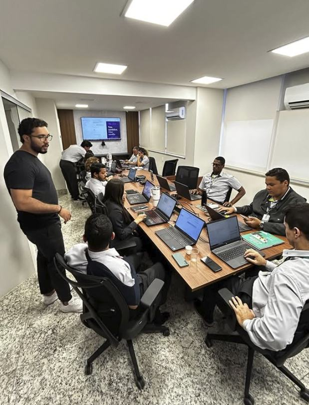

Artigo de teste com um título longo o bastante para quebrar em duas linhas no destaque

Parágrafo de abertura do artigo de teste. Ele serve para medir a medida de leitura e o ritmo do corpo exportado pelo editor, com um trecho longo o bastante para quebrar em várias linhas em telas largas e em telas estreitas, sem depender de conteúdo real.
Um título de seção (h2)
Texto corrido com ênfase, itálico e um link no meio da frase. O corpo continua por mais algumas linhas para que se veja a entrelinha e o espaço entre parágrafos.
Segundo parágrafo da seção, também de teste, para conferir o espaçamento vertical entre blocos de texto consecutivos.
Um subtítulo (h3)
- Primeiro item de lista de teste
- Segundo item, um pouco mais longo para quebrar linha e mostrar o recuo e o marcador da lista
- Terceiro item
- Primeiro passo numerado de teste
- Segundo passo numerado, também longo o suficiente para quebrar em duas linhas no desktop
- Terceiro passo
Uma citação de teste em bloco, para ver como o corpo destaca uma frase de apoio.

Outra seção (h2)
Mais texto de teste depois da figura, para ver o retorno ao ritmo de leitura.

Último parágrafo de teste, depois da figura em retrato.
Prepare sua operação para trabalhar com agentes de IA.
Conectamos cultura, método e execução técnica à rotina real da sua empresa para gerar produtividade, previsibilidade e escala.